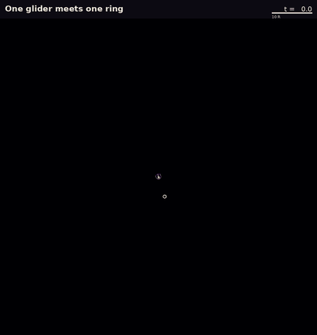
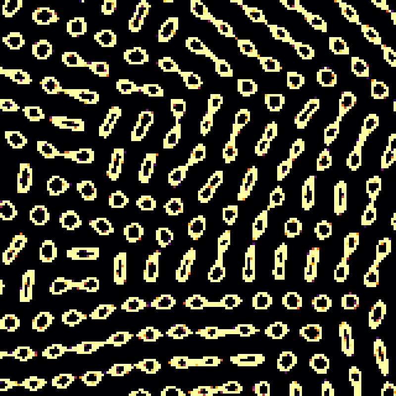
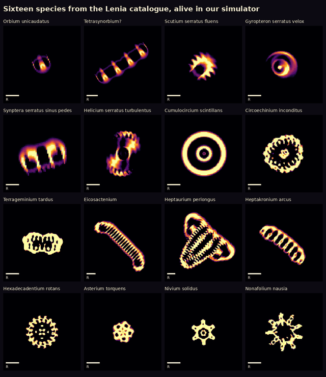
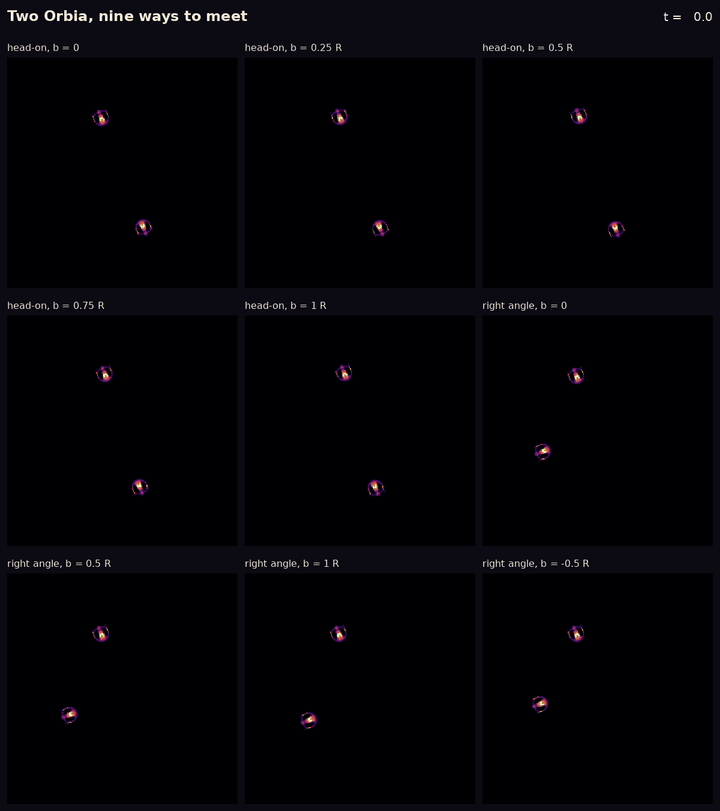
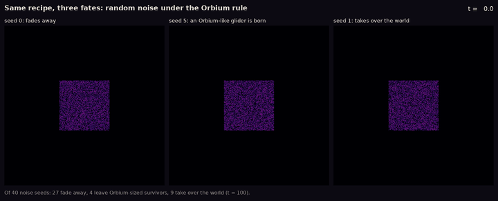
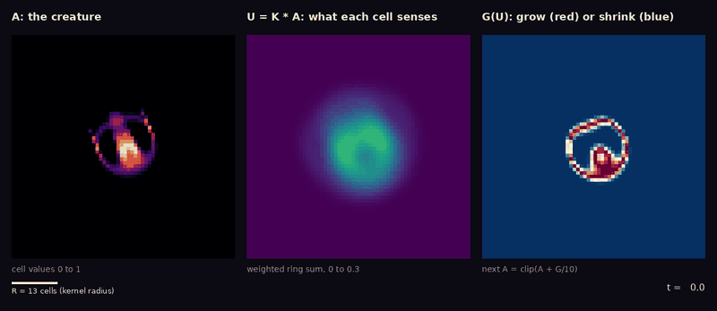
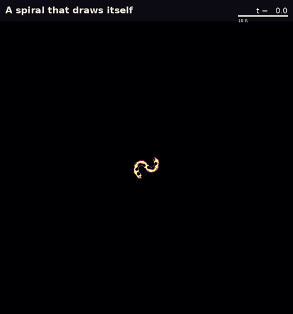
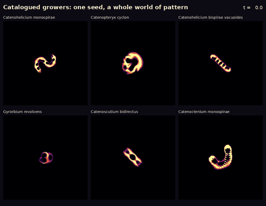

Room 8 · A visual field trip, 2026-11-07
Field trip: what Lenia can look like
The other rooms each follow one question about four animals. This room is a field trip: an afternoon of filming whatever looked most striking, for a lightning talk. Every frame is still a recorded simulation with a stated rule, seed and final-state hash. Most of what you see here was already known to Lenia's inventor, Bert Chan; the labels say so.
The reef, at four times the size


What you see. Contact, fusion and a spreading front, as in Room 7. Behind the front everything freezes into small rings and dumbbells, lined up in patches with boundaries between them.
What the ledger says. C052indep. checked covers only the first 25 time units, at the expedition's world sizes. Everything later, and this world size, is a single run with one engine. Timing and colony mass move with the timestep and grid C053num. fragile. The patches are an observation in one run, not a measurement.
Sixteen catalogued species

What you see. Gliders, rotors, a pulsing ring and long crawling chains, all still alive. Every name and seed is Chan's.
What the ledger says. We ran every eligible catalogue entry through our own simulator C057observed: 509 of 526 were still bounded patterns after 100 time units. That checks persistence only, not that each one keeps its catalogued shape.
Two Orbia, nine ways to meet

What you see. Scattering, mutual destruction, one survivor, and fusion into a single double body, depending only on how the two are lined up.
What the ledger says. C058observed: one sample per geometry. Chan catalogued these outcomes in 2019; this is our simulator reproducing them.
Same recipe, three fates

What you see. From identical recipes: nothing, one glider, or a world taken over.
What the ledger says. C056observed: 27 of 40 died, 4 left one Orbium's worth of mass, 9 filled the world. Finding Orbium in a "primordial soup" is how Chan first found it.
How a step works

Growers

